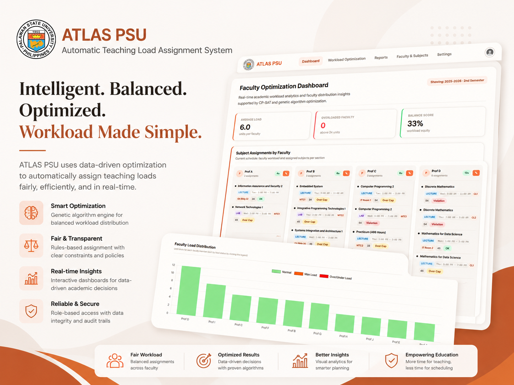
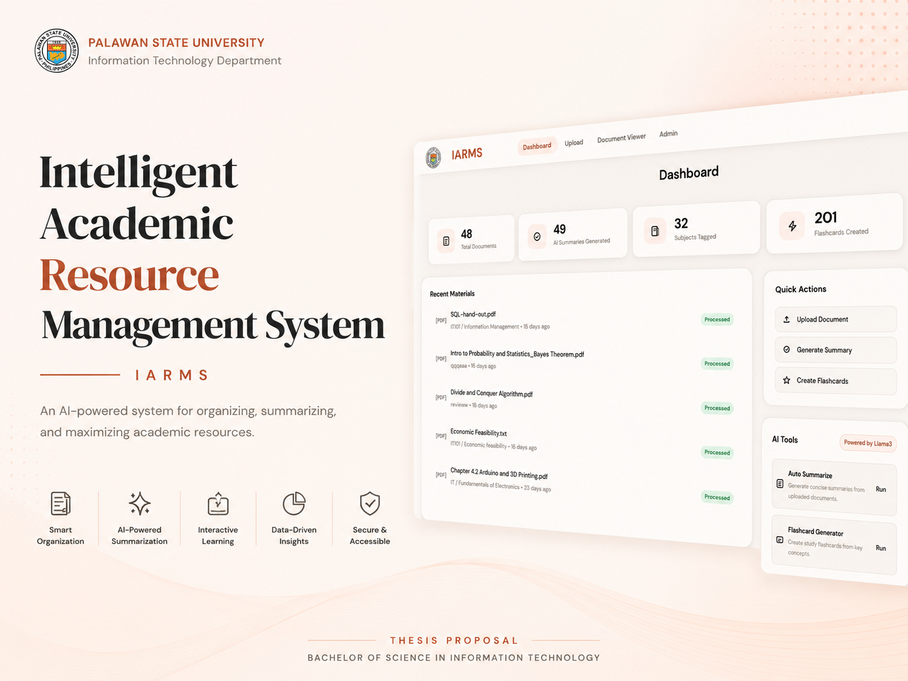
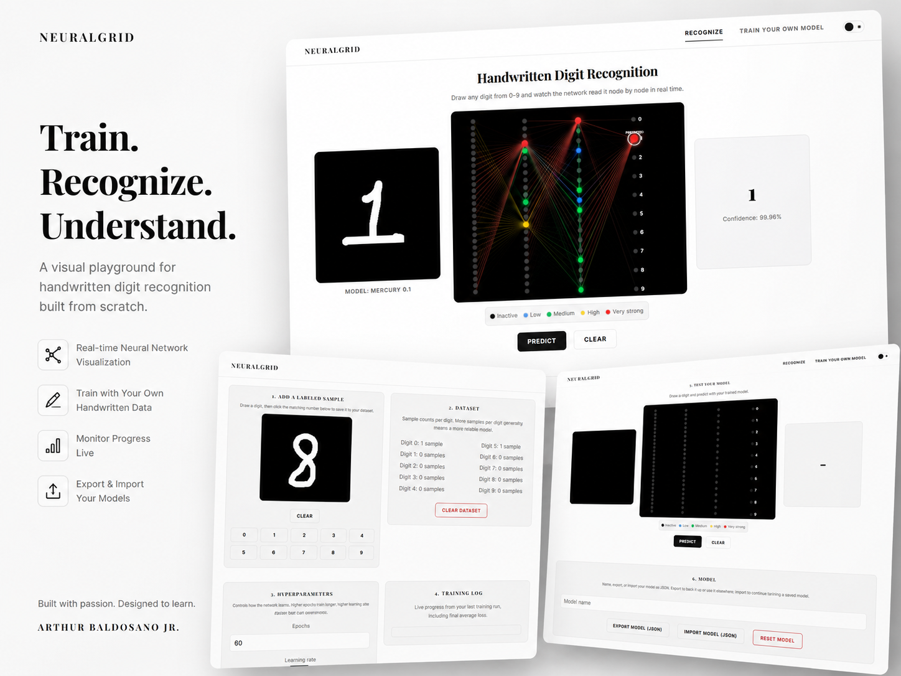

Systems & Data Analyst · Full-Stack Builder · PSU-SITE President · Puerto Princesa, Palawan
I analyze problems, design the systems that solve them, and ship the result end to end, from browser-based neural networks to AI-powered academic tools, all engineered for performance and real-world use.
About Me
I'm Arthur Baldosano Jr., a systems and data analyst based in Puerto Princesa, Palawan. I specialize in breaking down requirements, designing the underlying system, and directing that design into full-stack web applications, e-commerce platforms, and academic systems. All custom, all built from scratch, none from templates. I currently serve as PSU-SITE President and manage my own freelance IT practice independently.
On the product side, I independently designed, built, and operate PinnedPicks: an affiliate e-commerce platform curating product picks across Shopee, Amazon, and SHEIN, with a social content strategy driving its traffic.
Selected Work
A cross-section of what I analyze and ship: an optimization system for real faculty scheduling, an AI-powered academic platform, and a neural network trained from scratch and rendered live in the browser. I also build for fun. Two incremental/arcade games and a from-scratch handwriting recognizer round out my range as a systems and data analyst who directs full-stack builds.

Primary Featured · Thesis Proposal Prototype
An automated decision-support system that uses an optimization algorithm to streamline and balance faculty teaching load assignments for department chairpersons at Palawan State University's College of Sciences.

01 · Thesis Proposal Prototype
AI-powered academic resource platform for PSU's BSIT students. Generates summaries, flashcards, quizzes, glossary, and key concepts from uploaded documents.

03 · Live Project
A fully browser-based handwritten digit recognizer powered by a neural network trained from scratch in vanilla JavaScript, with a live pseudo-3D visualization of every activation as predictions happen.
Ask Me Anything
An AI assistant trained on my own background, so you can get straight answers about my projects, skills, and experience without digging through every page. Prefer something quicker? Switch to Terminal Mode for instant command-line lookups.
Try My Sandbox
A real Python runtime running client-side via Pyodide, no backend, no setup. Write a script, hit run, and watch it execute instantly.
Code output will appear here.